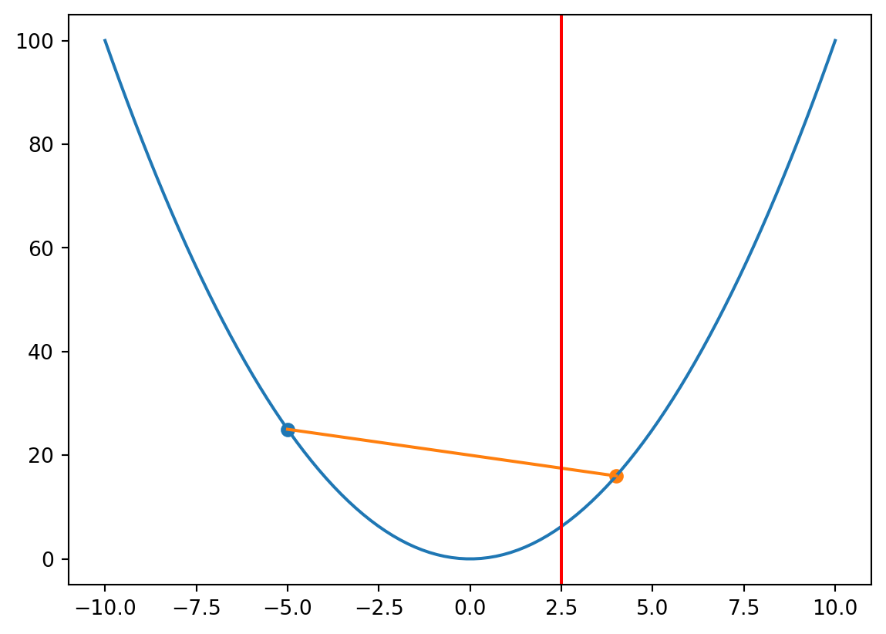
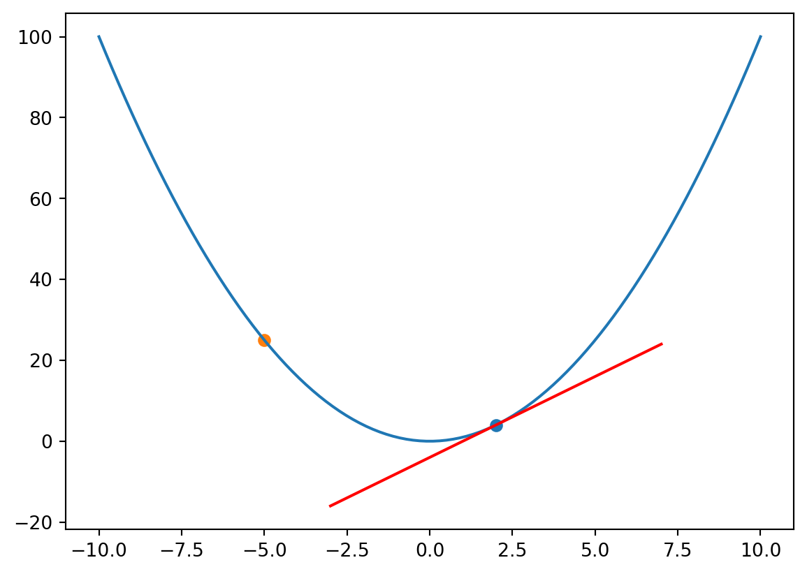

Matrix Derivatives
Good link: https://www.math.uwaterloo.ca/~hwolkowi/matrixcookbook.pdf
Some useful identities
- \[\frac{\partial}{\partial X} \log |X| = X^{-1}\]
Proof: \[\frac{\partial}{\partial X} \log |X| = \frac{1}{|X|} \frac{\partial |X|}{\partial X}\]
We know that \[ (\frac{\partial |X|}{\partial X})_{ij} = \frac{\partial}{\partial X_{ij}} * det(X) \]
and \[ det(X) = X_{i1} C_{i1} + X_{i2} C_{i2} + \dots + X_{in} C_{in} \] where \(C_{ij}\) is the cofactor of \(X_{ij}\). So, \[ \frac{\partial}{\partial X_{ij}} * det(X) = C_{ij} \] \[ \frac{\partial |X|}{\partial X} = C = adj(X)^T \] where \(C\) is the cofactor matrix of \(X\). \(adj(X)\) is the adjugate matrix of \(X\) and \(X^{-1} = \frac{adjX}{|X|}\).
so we get \[ \frac{\partial}{\partial X} \log |X| = \frac{1}{|X|} \frac{\partial |X|}{\partial X} = \frac{1}{|X|} adj(X)^T = ({X^{-1}})^T \]
Reference: kamper matrix calculus
- \(\frac{\partial}{\partial X} (z^TX^{-1}z) = -(X^{-1})zz^T(X^{-1})\)
Proof: \[ \frac{\partial}{\partial X} (z^TX^{-1}z) \]
Lets first compute the derivative of \(z^TX^{-1}z\) with respect to \(X_{ij}\) \[ \frac{\partial}{\partial X_{ij}} (z^TX^{-1}z) \]
Lets first derive \(\frac{\partial X^{-1}}{\partial X_{ij}}\) \[ \frac{\partial X^{-1}}{\partial X_{ij}} \] Using \(X * X^{-1} = I\) we get \[ X^{-1}\frac{\partial X}{\partial X_{ij}} + \frac{\partial X^{-1}}{\partial X_{ij}}X = 0 \] i.e. \[ \frac{\partial X^{-1}}{\partial X_{ij}} = -X^{-1}\frac{\partial X}{\partial X_{ij}}X^{-1} \] where \(\frac{\partial X}{\partial X_{ij}}\) is the matrix of partial derivatives of \(X\) with respect to \(X_{ij}\) and it’s elements are \(0\) except for the element at \(i,j\) which is \(1\).
So lets say \(H = \frac{\partial\ tr(z^TX^{-1}z)}{\partial X}\) \[ H_{ij} = \frac{\partial}{\partial X_{ij}} tr(z^TX^{-1}z) \] Using cyclic property of trace we get \[ H_{ij} = \frac{\partial}{\partial X_{ij}} tr(z^TX^{-1}z) = \frac{\partial}{\partial X_{ij}} tr(zz^T(X^{-1})) \]
We know that \[ \partial(Tr(A)) = Tr(\partial(A)) \] because trace is linear. so \[ H_{ij} = tr(zz^T\frac{\partial}{\partial X_{ij}}(X^{-1})) = tr(zz^T(-X^{-1}\frac{\partial X}{\partial X_{ij}}X^{-1})) \] Using cyclic property of trace we get
\[ H_{ij} = tr(X^{-1}zz^TX^{-1}\frac{\partial X}{\partial X_{ij}}) \]
Now suppose that \[ F = X^{-1}zz^TX^{-1} \] then \[ tr(F\frac{\partial X}{\partial X_{ij}}) = F_{ji} = F_{ij} \] since \(F\) is symmetric. Hint: You can think of the fact only the \(jth\) row of \(F\) is multiplied by the \(jth\) column, and only \(ith\) column of \(jth\) row of \(F\) is multiplied by the \(ith\) row of \(jth\) column of \(F\) leading to element at \(F_{jj}\) contributing and the rest being zero.
Hence: \(H = -X^{-1}zz^TX^{-1}\)
Prove that if \(z^THz \geq 0\) then \(H\) is positive semi-definite and cost function \(J\) is convex. \(H\) is Hessian matrix of \(J\).
Some definitions first:
Convex function
A function \(f\) is convex if for any \(x,y \in \mathbb{R}^n\) and \(\alpha \in [0,1]\) we have \[ f(\alpha x + (1-\alpha)y) \leq \alpha f(x) + (1-\alpha)f(y) \]
This basically means that any line segment between two points on the graph of the function lies above the graph of the function.
Convex functions properties
Property 1: If \(f\) is convex then \(f(\alpha x + (1-\alpha)y) \leq \alpha f(x) + (1-\alpha)f(y)\) for any \(\alpha \in [0,1]\) and \(x,y \in \mathbb{R}^n\).
Proof: Let \(x,y \in \mathbb{R}\) and \(\alpha \in [0,1]\). Since any point between \(x\) and \(y\) on the line segment \([x,y]\) is given by \(\alpha x + (1-\alpha)y\), we have the following from the definition of convexity:
The value of function as point \(z = \alpha x + (1-\alpha)y\) is \(f(\alpha x + (1-\alpha)y)\). Now the equation of line is: \[ y = y_1 + \frac{y_2 - y_1}{x_2 - x_1}(x - x_1) \] Plugging values for \(z\) and \(x_1, x_2, y_1, y_2\) we get:
\[ \begin{split} y & = f(x) + \frac{f(y) - f(x)}{y - x}(\alpha.x + (1 - \alpha)y - x) \\ &= f(x) + \frac{f(y) - f(x)}{y - x}(y - x)(1 - \alpha) \\ &= f(x) (1 - 1 + \alpha) + f(y)(1 - \alpha) \\ &= f(x) (\alpha) + f(y)(1 - \alpha) \\ \end{split} \]
So according to the definition of convexity we have: \[ f(\alpha x + (1-\alpha)y) \leq \alpha f(x) + (1-\alpha)f(y) \]
Property 2: Suppose \(f: \mathcal{R}^n \rightarrow \mathcal{R}\). Then
\(f(y) \geq f(x) + \nabla f(x)^T(y-x)\) for all \(x,y \in \mathcal{R}^n\) if and only if \(f\) is convex
\(\nabla^2 \succeq 0\) if and only if \(f\) is convex
Proof:

- Using the definition of convexity we have: \[ \begin{split} f(\alpha x + (1-\alpha)y) &\leq \alpha f(x) + (1-\alpha)f(y) \\ f(y) - f(x) \geq \frac{f(x + \alpha(y - x)) - f(x)}{\alpha} \\ \text{if $\alpha \rightarrow$ 0} \\ f(y) - f(x) \geq \nabla f(x)^T(y - x) \\ \end{split} \]
Now we also need to prove the other direction. So suppose \(f(y) \geq f(x) + \nabla f(x)^T(y-x)\) for all \(x,y \in \mathcal{R}^n\). We need to prove that \(f(\alpha x + (1-\alpha)y) \leq \alpha f(x) + (1-\alpha)f(y)\). Let’s consider \(z = \alpha x + (1-\alpha)y\). Then we have:
\[ \begin{split} f(x) &\geq f(z) + \nabla f(z)^T(x - z) \\ f(y) &\geq f(z) + \nabla f(z)^T(y - z) \\ \text{Multiply first with $\alpha$ and other by $1 - \alpha$ and add} \\ \alpha f(x) + (1 - \alpha)f(y) &\geq \alpha f(z) + (1 - \alpha)f(z) + \\ \alpha \nabla f(z)^T(x - z) + (1 - \alpha)\nabla f(z)^T(y - z) \\ &\geq f(z) + \nabla f(z)^T(\alpha x + (1 - \alpha)y - z) \\ \text{Since $\alpha x + (1 - \alpha)y = z$ } \\ &\geq f(z) + \nabla f(z)^T(0) \\ &\geq f(z) \\ \end{split} \]
- Let’s prove the second part. Suppose \(\nabla^2 \succeq 0\) then we have:
Let us first prove it for \(f: \mathbb{R} \rightarrow \mathbb{R}\). Let \(x, y \in dom(f)\) and \(x \leq y\) then we have: \[ \begin{split} f(y) - f(x) &\geq f'(x)(y - x) \\ f(x) - f(y) &\geq f'(y)(x - y) \\ \implies \frac{f'(x) - f'(y)}{x - y} &\geq 0 \\ \text{if $x \rightarrow y$ then} \\ \frac{f'(x) - f'(y)}{x - y} \rightarrowtail f''(x) \geq 0 \\ \end{split} \]
We can prove the other direction using the mean value version of the Taylor’s theorem. Suppose \(f''(x) \geq 0\) then there exists a point \(z \in (x, y)\) such that:
\[ \begin{split} f(y) = f(x) + f'(x)(y - x) + f''(z)\frac{(y - x)^2}{2} \\ \text{Since $f''(z) \geq 0$} \\ f(y) \geq f(x) + f'(x)(y - x) \\ \end{split} \]
Now we need to prove the same for \(f: \mathbb{R}^n \rightarrow \mathbb{R}\). Remember that a convex function is convex along all lines. i.e. if \(f: \mathbb{R}^n \rightarrow \mathbb{R}\) is convex then \(g(\alpha) = f(x + \alpha(v))\) is convex for all \(x \in \mathbb{R}^n\) and \(v \in \mathbb{R}^n\).
\[ \begin{split} g''(\alpha) = v^T\nabla^2 f(x + \alpha v) v \\ \end{split} \]